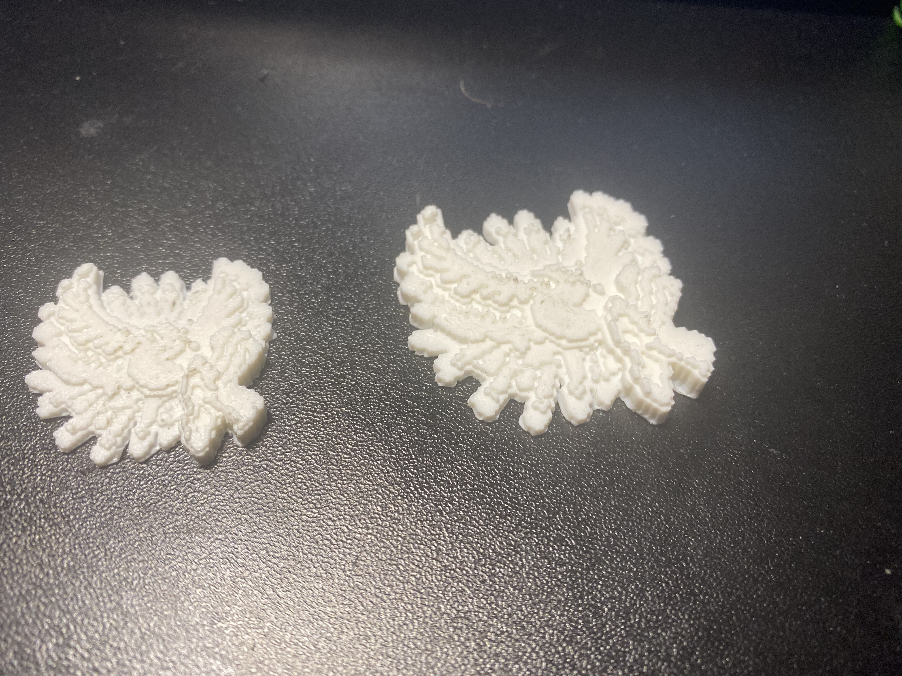

Here my 2 drafts. I want to do 1 more for a larger size on the more detailed object. For now I have the first draft which shows little detail and the 2nd draft showing the detail in which color should be shown but instead I added/subtracted certain colors. The meaning on my I chose this art was the influence of Japanese video games to the west shapped the gaming industry which influenced our culture especially online. This object is a creature from the Pokemon games I chose since I had an attachment to the series.
